代理安全从提示走向运行时
安全类项目不再只给代理加一句“小心”，而是把审计流程、系统调用、网络出口和红队方法论做成可执行约束。security-audit-skill 把发现写成可复核记录，OpenShell 与 sandbox-runtime 从系统层限制进程，Claude-Red 把攻击面知识固化成技能。共同指向：代理能力越强，边界越需要工程化。
security-audit-skillOpenShellsandbox-runtimeClaude-Red
每天看见开源项目的升温轨迹。两种榜单、项目解读与历史对比，整理成可阅读、可下载的图文。
把编码代理变成安全审计员
这是给编码代理用的安全审计技能：按侦察、覆盖狩猎、候选验证、结构化输出、独立复核和中性报告六阶段运行，产出带来源追踪的机器可读发现，适合安全团队与代理开发者搭建漏洞发现流程。
README 说明它从 Cloudflare 的漏洞发现工具链起步，强调多轮审计可累加、遗留问题不当作已覆盖；这种把审计过程记录成账本的做法，可能让代理审计更易复核，也值得观察其对误报的控制。
昨日对比待积累 · 创建 129 天 · MIT
查看 cloudflare/security-audit-skill ↗面向自主代理的隔离运行时
OpenShell 是给自主 AI 代理用的安全私有运行时：用内核级沙箱限制文件、系统调用和网络访问，凭据只在获批端点注入，策略变更先做形式化验证，适合需要让代理读文件、装包、调 API 的团队。
README 把文件隔离和网络隔离视为必须同时具备，并提供策略顾问与证明器；这类运行时把代理能力边界写进策略，可能降低误操作与密钥外泄风险，但实际部署仍依赖内核与容器环境支持。
昨日对比待积累 · 创建 242 天 · Apache-2.0
查看 NVIDIA/OpenShell ↗让代理少写代码多交付
Ponytail 是一个给 AI 编码代理加“懒资深工程师”风格的技能：强调能不写就不写、用更少代码和 token 完成任务，并附带基准与测试覆盖数据，适合想让代理输出更精简的开发者。
README 称新版重写后在代码量、耗时、成本和 token 上有下降，同时高风险逻辑带测试的比例更高；这些数字来自其自述基准，实际效果可能因任务与代理而异，值得独立复现。
昨日对比待积累 · 创建 135 天 · MIT
查看 DietrichGebert/ponytail ↗用 HTML 写可渲染视频
HyperFrames 把 HTML、CSS、媒体和可定位动画转成确定性 MP4，既可用 CLI 本地渲染，也能通过技能让 Claude Code、Codex、Cursor 等代理制作视频，适合做产品短片和模板化视频的团队。
它把视频制作拆成写 HTML、接动画、预览、检查和渲染，并提供面向代理的技能与插件；这种“代码即视频”的路径可能方便版本管理和批量生成，但复杂剪辑仍要看模板与渲染管线。
昨日对比待积累 · 创建 229 天 · Apache-2.0
查看 heygen-com/hyperframes ↗把多家免费模型聚合为一个接口
FreeLLMAPI 把多家免费 LLM 提供方和自定义 OpenAI 兼容端点聚合到统一的 /v1 接口，带路由、失败切换、加密密钥和用量跟踪，适合个人做模型实验或给兼容客户端临时接模型。
README 强调免费额度叠加、按密钥跟踪用量和自动切换，也注明仅限个人实验；聚合免费层可能降低试用门槛，但配额变化、服务条款和稳定性都需要使用者自行留意。
昨日对比待积累 · 创建 187 天 · MIT
查看 tashfeenahmed/freellmapi ↗不靠容器的轻量进程沙箱
Anthropic 的 sandbox-runtime 用 macOS 的 sandbox-exec、Linux 的 bubblewrap 等系统能力，对任意进程做文件和网络限制，也能包住 MCP 服务器与 shell 命令，适合给代理和本地工具加一层隔离。
它强调默认最小权限、按需开口，并提供 Unix socket 限制和违规监控；相比完整容器更轻，但平台差异明显，Windows 走独立账户与过滤平台，跨平台行为值得实际测试。
昨日对比待积累 · 创建 370 天 · Apache-2.0
查看 anthropics/sandbox-runtime ↗给 Claude 的红队技能库
claude-red 是面向 Claude 技能系统的攻防安全技能库，用结构化 SKILL.md 覆盖 Web、认证、无线、云、移动、提权与漏洞研究等方向，适合授权红队、漏洞赏金和安全教学场景。
项目按攻击面拆分技能，并支持按需加载与会话触发，避免无关上下文占用；这类技能把方法论固化成可复用提示，可能提升演练一致性，但也要求使用者严格限定授权范围。
昨日对比待积累 · 创建 235 天 · MIT
查看 SnailSploit/Claude-Red ↗给 AI 前端加设计约束
Impeccable 是给 AI 编码代理用的设计语言与技能：提供初始化、评审、审计、润色、动效等命令，并用确定性规则检查模板化、配色、排版等常见问题，适合让代理产出更完整的前端界面。
它把产品事实、设计系统和视觉方向分开记录，再用命令和浏览器扩展跑检测规则；这种做法可能减少“AI 味”界面，但规则覆盖与项目适配度仍需在真实页面中检验。
昨日对比待积累 · 创建 343 天 · Apache-2.0
查看 pbakaus/impeccable ↗把 Claude 变成岗位专家
Anthropic 开源的知识工作插件集，面向销售、客服、产品、市场、法务、财务、数据等岗位，把技能、连接器、斜杠命令和子代理打包，适合在 Claude Cowork 或 Claude Code 中按职能定制工作流。
每个插件按岗位组织工具与流程，并鼓励团队替换成自己的术语和系统；这种“岗位插件”可能让非工程用户更快上手代理，但连接器权限与数据边界需要组织自行治理。
昨日对比待积累 · 创建 274 天 · Apache-2.0
查看 anthropics/knowledge-work-plugins ↗开源紫微斗数排盘引擎
基于倪海厦《天纪》体系的紫微斗数开源排盘引擎，包含排盘算法、四化、格局知识库、古籍原文与大规模解读数据集，适合研究传统命理、做排盘应用或验证算法的开发者。
项目把算法、数据和网站 Demo 的边界写得很清楚，并持续校正星曜亮度与引文出处；开源排盘和数据集可能方便复现与研究，但解读内容的准确性和适用性仍需读者自行判断。
昨日对比待积累 · 创建 177 天 · MIT
查看 Renhuai123/ziwei-doushu ↗开箱即用的本地 AI 代理
Cindy 是开源的本地 AI 代理客户端，把 Claude Code、Codex 等 harness 与多种模型、工具放进桌面和移动端，支持记忆、技能、自动化、MCP 与插件，适合想让代理直接操作本机项目的用户。
README 强调可在任务中切换模型与 harness，并保留工作区、记忆和技能连续性，也可跳过登录用本地代理；这种多 harness 编排可能减少工具割裂，但托管服务与本地模式的能力边界需要区分。
昨日对比待积累 · 创建 94 天 · Apache-2.0
查看 makecindy/cindy ↗AI 图片创作无限画布
无限画布是面向 AI 创作的开源工作台，把画布编排、生图、参考图编辑、视频生成、对话助手、提示词库和素材管理放在同一界面，兼容 OpenAI 接口生态，适合视觉探索和连续迭代图片。
项目明确处于开发阶段，不保证本地存储格式兼容，并提醒二次开发保留作者标识；把多种生成能力放进画布可能方便组合工作流，但数据迁移和渠道接入稳定性值得使用者关注。
昨日对比待积累 · 创建 159 天 · MIT
查看 basketikun/infinite-canvas ↗给编码代理一个桌面身体
Tiny Engineer 是一个小型桌面机器人：通过 Wi-Fi HTTP 或 USB 串口接收编码代理的状态，用舵机、表情和铃声表现读文件、写代码、思考与完成，适合想给 AI 编码流程加实体反馈的硬件爱好者。
项目提供 3D 打印件、主控板、固件和代理集成脚本，支持 Claude Code、Cursor 等，也开放 HTTP API；这类实体反馈可能让代理运行状态更直观，但组装和调试门槛不低。
昨日对比待积累 · 创建 65 天 · 许可证未标注
查看 jamro/tiny-engineer ↗用强化学习行走的小鸭子
Microduck 是 Pollen Robotics 的小型双足机器人“大脑”仓库，运行在 Rockchip 上，用 50Hz 控制循环驱动十五个舵机，加载强化学习策略，能走、滚、捡东西和起身，适合机器人研究与爱好者。
仓库包含控制守护进程、更新机制和仿真说明，训练策略放在另一个 microduck_rl 仓库；把 sim2real 策略落到小型双足平台可能方便复现实验，但硬件维护与安全边界仍需考虑。
昨日对比待积累 · 创建 88 天 · Apache-2.0
查看 pollen-robotics/microduck ↗先做 3D 预演再交给视频模型
CozyClay 是浏览器里的开源预演工具：搭场景、摆角色、编排动作与镜头，导出首尾帧、灰模参考和提示词给 AI 视频模型，适合广告、短片和分镜创作团队先控构图再生成。
它把动作编译、碰撞与脚滑检查、镜头时间线和导出放在同一工作台，也支持 MCP 与代理面板；这种先预演后生成的方式可能减少抽卡成本，但最终画质仍取决于视频模型。
昨日对比待积累 · 创建 88 天 · AGPL-3.0
查看 NomaDamas/CozyClay ↗懂代理状态的终端窗口管理器
tuios 是 Go 写的终端多路复用与窗口管理器，提供模态键位、平铺窗格、工作区、持久会话和代理收件箱，让多个编码代理在终端里运行并汇报状态，适合重度终端用户和代理编排者。
它强调守护进程保活、跨机器连接和代理状态上报，也有 tmux 兼容层；把窗格、会话与代理消息集中管理可能提升多任务效率，但学习键位和迁移现有 tmux 流程需要成本。
昨日对比待积累 · 创建 413 天 · MIT
查看 Gaurav-Gosain/tuios ↗代理 AI 资源清单
Awesome List of AI Agents 是持续维护的代理 AI 资源清单，按代理框架、工具、平台等分类收录数百个项目，并标注提交者与维护者信息，适合快速查找生态项目或做技术调研。
清单要求项目有公开仓库，并区分所有权与维护关系；这类列表能帮助建立全景，但收录不等于质量背书，项目活跃度和许可证仍需逐项核对。
昨日对比待积累 · 创建 1014 天 · MIT
查看 slavakurilyak/awesome-ai-agents ↗AI 原生矢量设计工具
OpenPencil 是开源的 AI 原生矢量设计工具，支持在实时画布上用提示词生成和修改 UI，带并发代理团队、Design-as-Code 与内置 MCP 服务器，适合探索 AI 辅助界面与矢量设计的工作流。
项目把多代理协作和设计文件、代码表达放在一起，并提供多语言说明；这种“边对话边改画布”的方式可能改变设计稿产出，但复杂设计系统与团队协作仍要看实际可用性。
昨日对比待积累 · 创建 250 天 · MIT
查看 ZSeven-W/openpencil ↗用镜头配方做产品视频
video-shotcraft 是给 Claude Code 和 Codex 的视频技能：从真实页面截图出发，挑选镜头配方、编排分镜、用 Remotion 做动画并完成节奏与音效，适合制作可编辑的产品宣传短片。
它强调每一帧由代码从自有素材绘制，而非直接生成视频，并提供镜头库、预览和剪辑工作台；这种模板化流程可能提高品牌一致性，但创意上限受配方库与代理理解影响。
昨日对比待积累 · 创建 98 天 · Apache-2.0
查看 Vincentwei1021/video-shotcraft ↗反 AI 模板化的设计技能
Hallmark 是面向 Claude Code、Cursor、Codex 等代理的设计技能，用多套主题、真实照片和浏览器检查规则，避免模板化排版与空泛页面，适合让代理快速搭出不像 AI 生成的网站。
它把检查分为硬性底线、模型习惯和工艺细节，并用新上下文评审做最后把关；这种“先定材料再排版”的方法可能减少千篇一律，但规则是否适配品牌仍要人工判断。
昨日对比待积累 · 创建 180 天 · MIT
查看 Nutlope/hallmark ↗安全类项目不再只给代理加一句“小心”，而是把审计流程、系统调用、网络出口和红队方法论做成可执行约束。security-audit-skill 把发现写成可复核记录，OpenShell 与 sandbox-runtime 从系统层限制进程，Claude-Red 把攻击面知识固化成技能。共同指向：代理能力越强，边界越需要工程化。
当代理能写页面，模板化审美就成了新问题。impeccable 用命令和检测规则约束排版、配色与动效，hallmark 用主题材料和浏览器检查拒绝“AI 味”，openpencil 则把提示词直接接到矢量画布。它们都在尝试把设计判断变成代理可执行、可复查的步骤，而不只是换一套皮肤。
代理工具正在从单一聊天窗口扩展成工作台：Cindy 把多种 harness、模型和本地文件放进桌面端，tuios 用终端窗格和收件箱管理多个代理，HyperFrames 与 CozyClay 把视频制作拆成可编排步骤。共同点是把模型、工具、状态和交付物放在一个可持续操作的环境里。
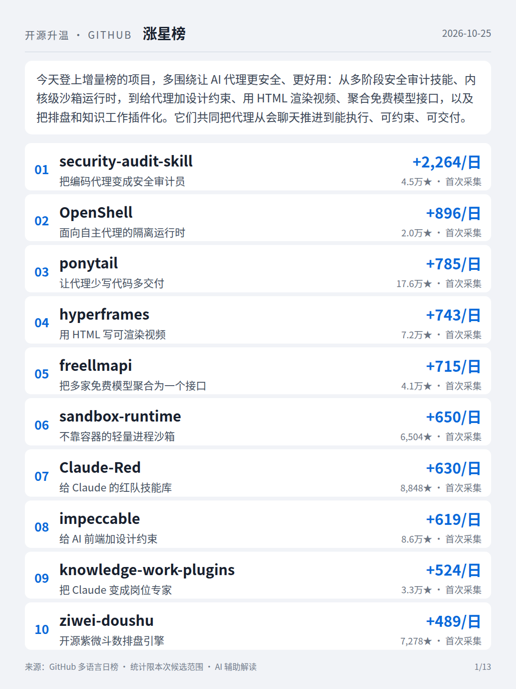
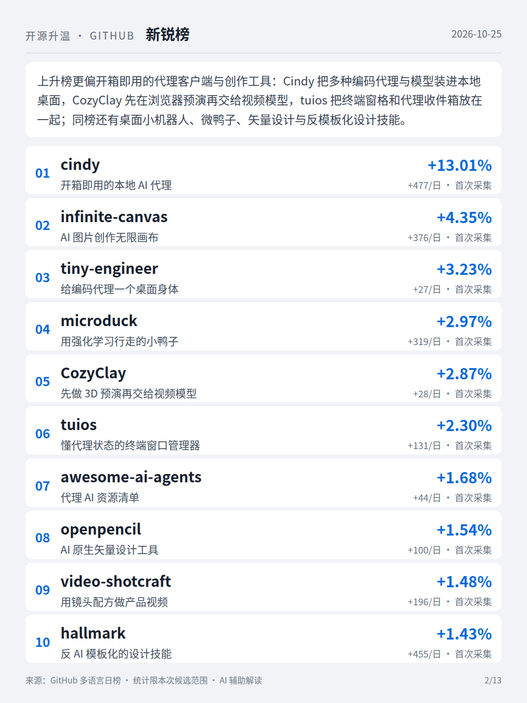
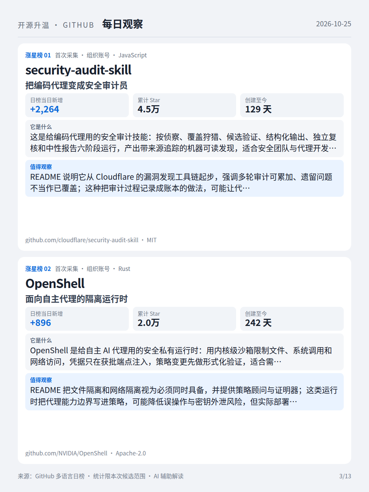
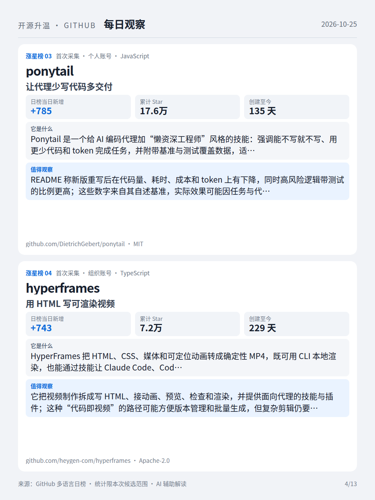
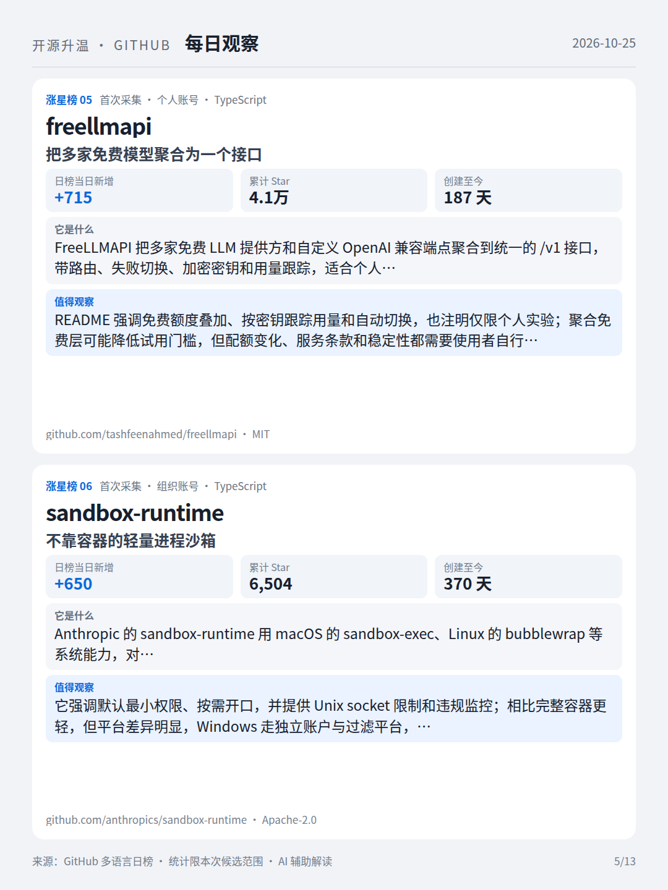
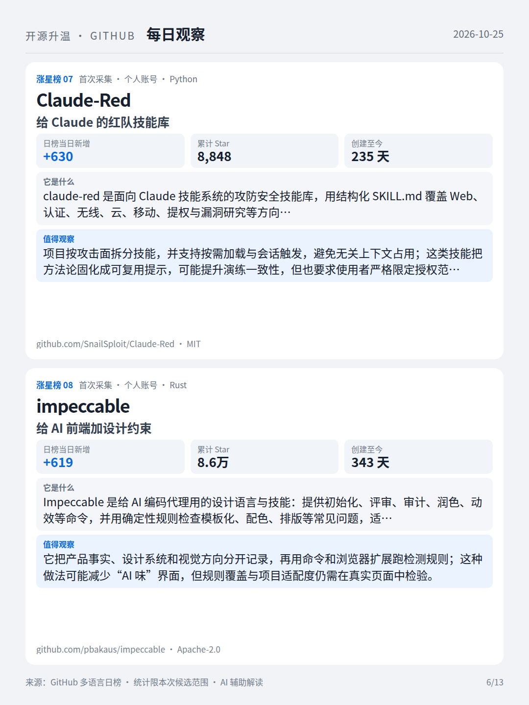
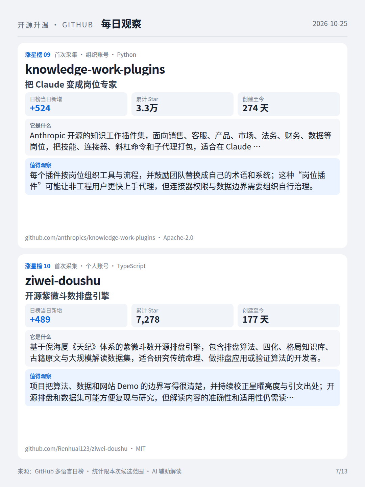
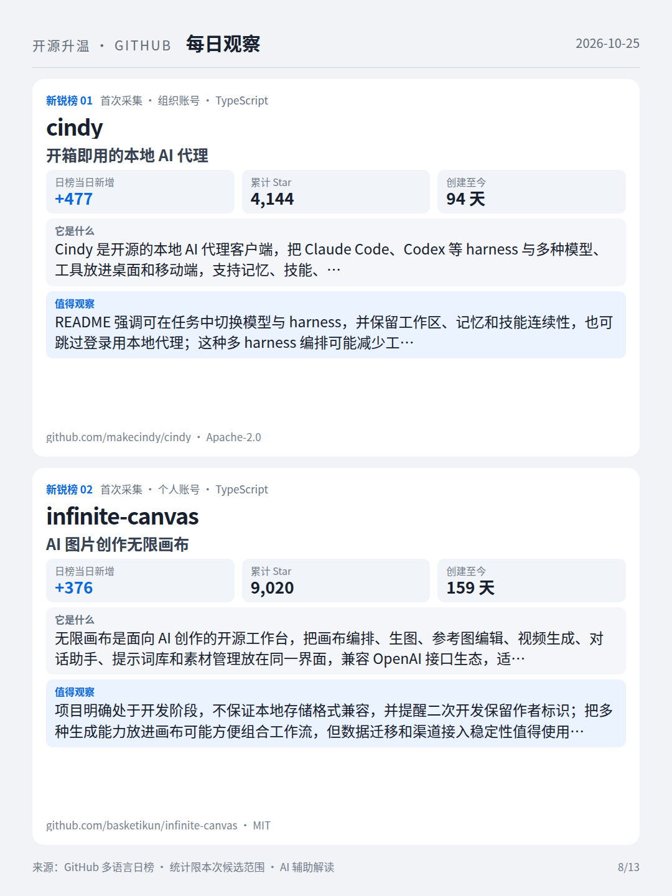
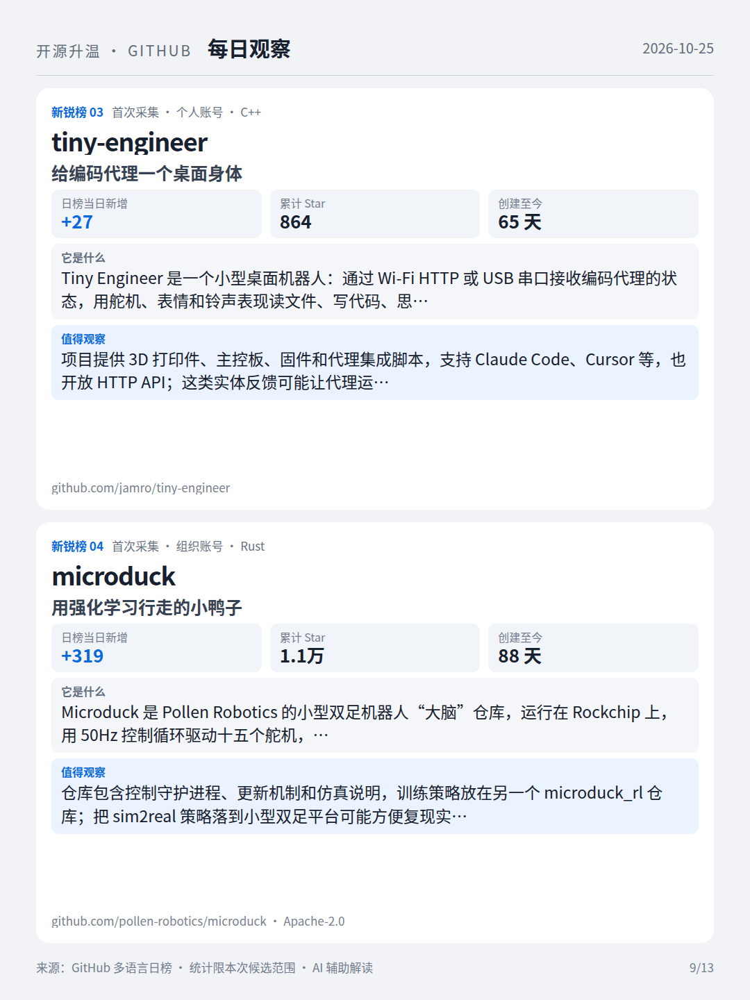
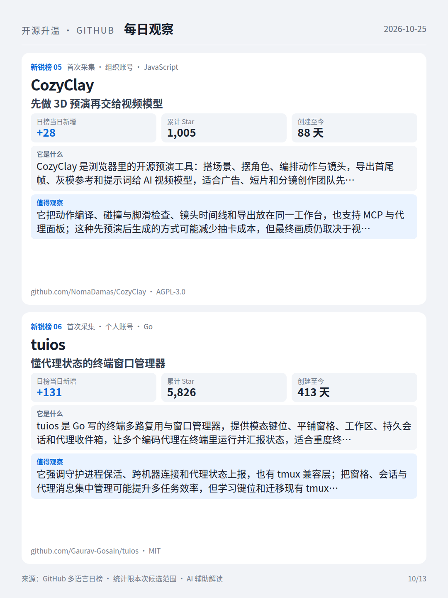
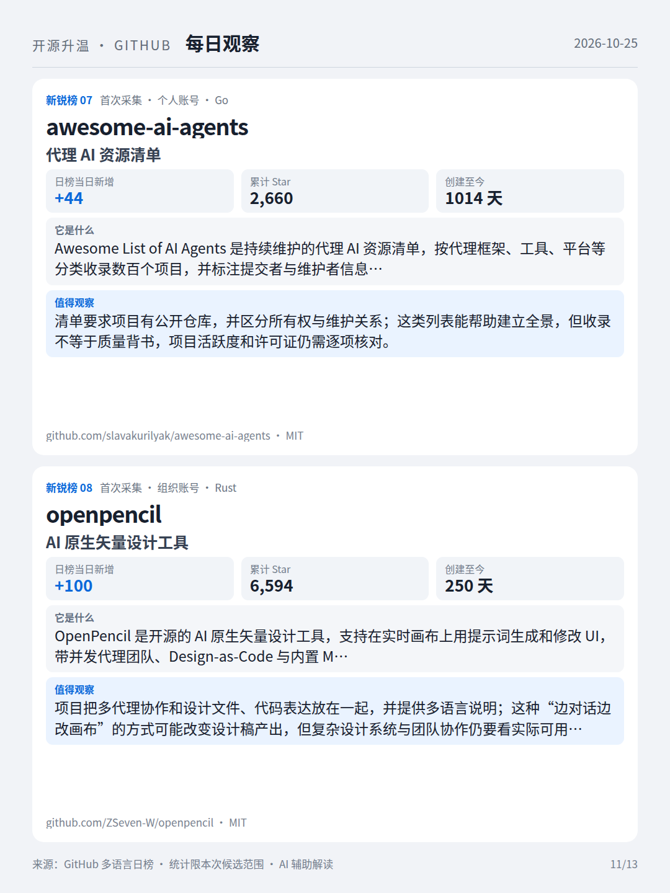
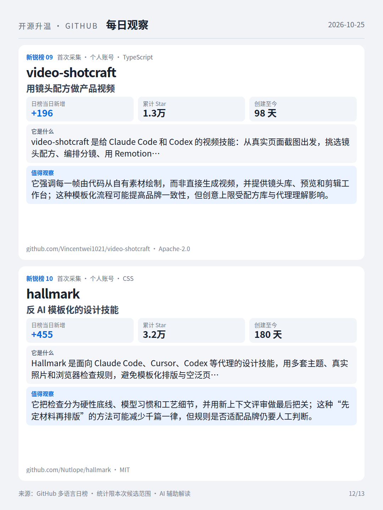
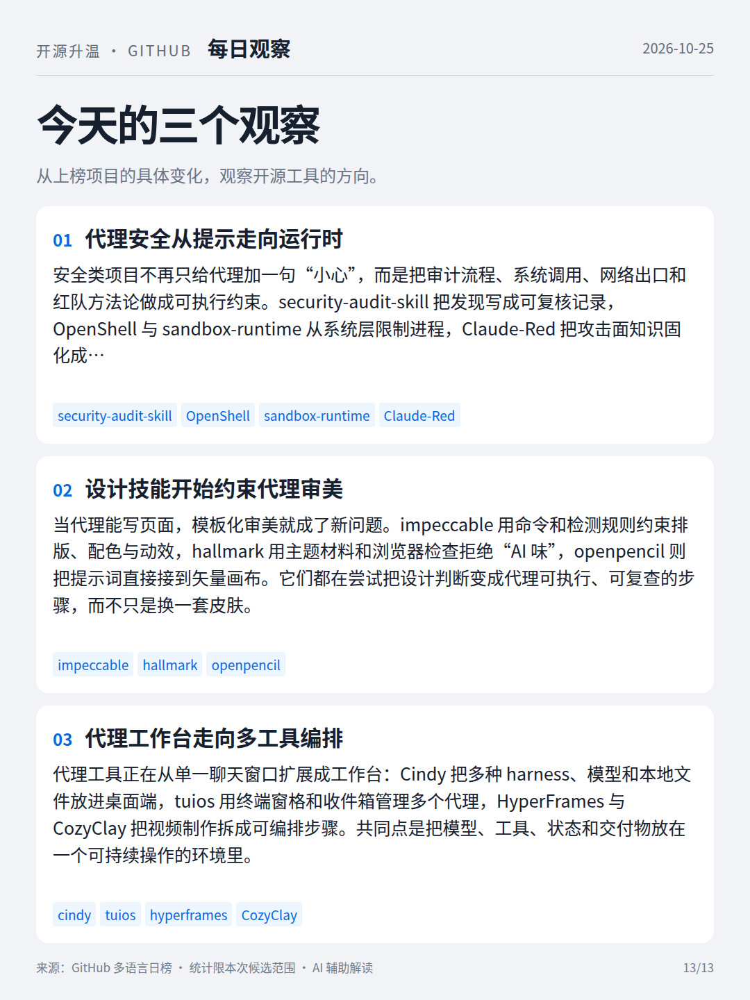